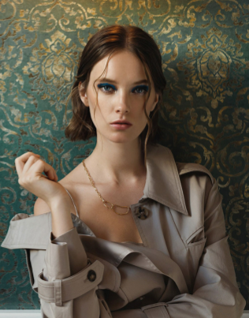

Photographer

Signature Frame - это фотостудия, специализирующаяся на художественной фотографии. Мы создаем уникальные снимки, сочетающие природную эстетику с тонкой работой со светом и цветом.
Наша команда профессиональных фотографов имеет образование в сфере визуальных искусств и многолетний опыт работы в индустрии. Мы стремимся запечатлеть не просто моменты, а настоящие произведения искусства.
Основные направления нашей работы включают художественный портрет, fine art фотографию, съемку в природных локациях и авторскую постановку кадра. Каждый проект для нас - это возможность создать что-то уникальное и запоминающееся.
Мы верим, что настоящая фотография - это не просто технически правильный снимок, а эмоция, история и искусство, застывшее в кадре.
Фотограф уделяет особое внимание естественности и эмоциональной глубине кадра. В работе ценит живые детали, атмосферу и искренность. Предпочитает снимать в природных локациях и работать с мягким дневным светом, чтобы создавать фотографии с художественным настроением и тонкой цветовой пластикой.
Наши фотоуслуги
Мы предлагаем полный спектр профессиональных фотоуслуг:
- Художественная портретная съемка
- Fine art фотография
- Съемка в природных локациях
- Авторская постановка кадра
- Ретушь и цветокоррекция премиум-класса
- Создание фотокниг и альбомов
- Консультации по визуальному стилю
Фирменные стили съемки
Каждый наш фотограф работает в уникальном стиле:
- Минимализм: Чистые композиции, акцент на деталях
- Fine Art: Художественная обработка, похожая на живопись
- Эмоциональный портрет: Съемка настоящих чувств и состояний
- Природная эстетика: Гармония человека и окружающего мира
- Черно-белая классика: Вневременная глубина и драматургия
Мы подберем стиль, который лучше всего отразит вашу индивидуальность.
Профессиональное оборудование
Мы работаем только с лучшей техникой:
- Камеры: Canon EOS R5, Sony A7IV
- Объективы: Carl Zeiss, Sigma Art серии
- Студийный свет: Profoto, Broncolor
- Редакционное ПО: Adobe Creative Cloud, Capture One
- Мобильная студия для выездных съемок
- Дроны для аэросъемки локаций
Качество оборудования гарантирует безупречный технический результат.